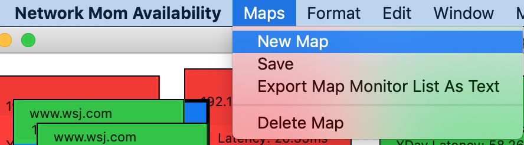
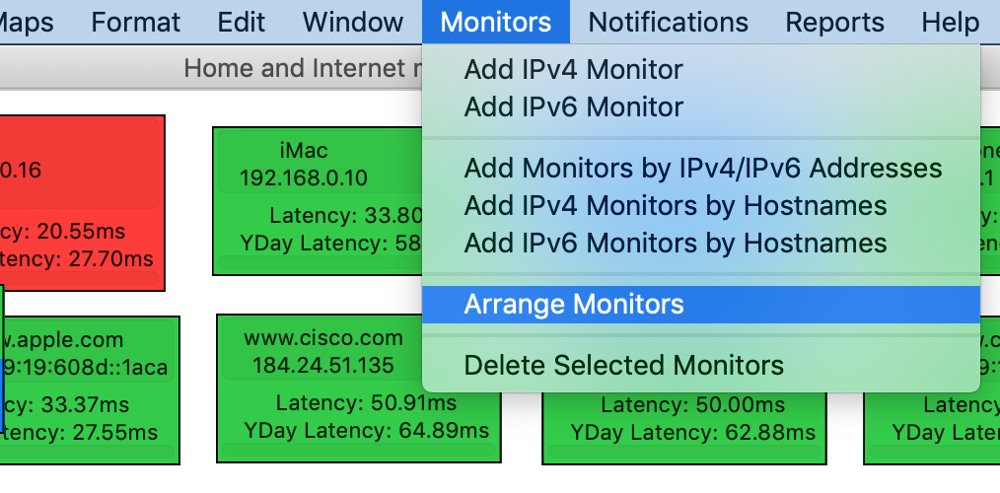

Maps
Email alerts and reports are per map . The theory is that all devices in a map are supported by a particular support team. If you have multiple teams, use a different map for each team. We recommend at least 2 maps per team: one for devices which require 24x7 paging alerts, the second for less important devices where emailing the support team is sufficient.
Network Mom availability creates one map by default. You can rename this map in Maps -> Edit Map . You can delete a map with Maps -> Delete Map (this requires confirmation). Deleting a map deletes all data for all monitors in that map and cannot be undone!
You can create new maps with Maps -> New Map .

The Maps -> Arrange Monitors menu will rearrange your monitors in a (roughly) square grid sorted alphanumerically by label.

https://networkmom.net feedback@networkmom.net Copyright 2019 Network Mom LLC